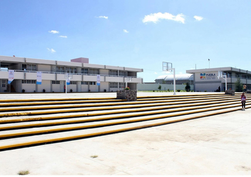

Mi vida es un mar de experiencias, día con día debido a mi estilo de vida, desde cumplir con mis responsabilidades, encargarme de mi hermana, como tener que trabajar ciertos días de la semana saliendo a otros ciudades u estados, lo cual hace que tenga una vida más atareada. Vivo solo con mi hermana prácticamente y tengo sueños bastante grandes para cumplir a corta edad, por eso es que me desgasto tanto todas las semanas, para lograrlos lo más antes posible.
Estudie toda mi vida en el Centro Escolar Manuel Espinosa Yglesias
Hice muchas amistades en todo el tiempo que estuve estudiando aquí, sin embargo no conservo a ninguna de ellas, siempre fui más de hacer amistades fuera de donde estudiaba, amigos cerca de mi casa, por trabajo o por amigos de amigos que iban en otras escuelas
Lamentablemente cuando iba a graduarme del bachillerato, llego la pandemia por lo que no tuve una graduación como tal, solo me dieron mis papeles y de hecho tuve que legalizarlos por mi cuenta